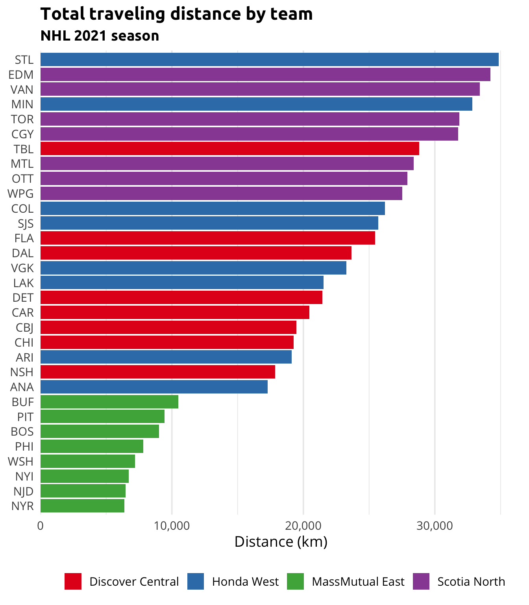
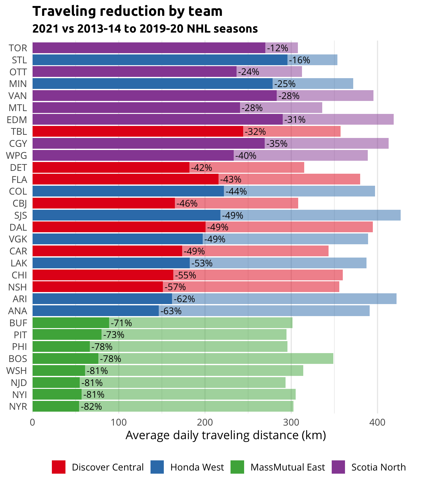

I’m sure I’m not the only one out there who was very enthusiastic when the National Hockey League
(NHL) unveiled its newly reshuffled divisions
ahead of the 2021 season. I was secretly dreaming of an all-Canadian division for a long time, but
never I thought that this dream could ever materialize. We’re entitled to expect electrifying
hockey for the upcoming season, and some rivalries will certainly reach a higher, more emotional
level, but what about the effect of this reshuffling on team traveling?
This post is the first of a series in which I will explore and explain different features of the
package tidynhl, a
personal project that is slowly but surely taking shape. The purpose of this package is to give
access to NHL data by facilitating the interaction with their open stats API, and to provide this
data on a ready-to-use and clean (or tidy) format.
Team schedules for the 2021 season
To begin, let’s get and print an excerpt of the NHL 2021 schedule with the tidy_schedules()
function.
# Load the packages
library(data.table)
library(tidynhl)
# Get the 2021 NHL schedule
nhl_schedule_2021 <- tidy_schedules(
seasons_id = "20202021",
playoffs = FALSE
)
# Print an excerpt
nhl_schedule_2021[]
#> season_years season_type game_datetime game_status venue_name away_abbreviation away_score home_score home_abbreviation game_nbot game_shootout
#> 1: 2020-21 regular 2021-01-13 17:30:00 final Wells Fargo Center PIT 3 6 PHI 0 FALSE
#> 2: 2020-21 regular 2021-01-13 19:00:00 final Scotiabank Arena MTL 4 5 TOR 1 FALSE
#> 3: 2020-21 regular 2021-01-13 20:00:00 final Amalie Arena CHI 1 5 TBL 0 FALSE
#> 4: 2020-21 regular 2021-01-13 22:00:00 final Rogers Place VAN 5 3 EDM 0 FALSE
#> 5: 2020-21 regular 2021-01-13 22:30:00 final Ball Arena STL 4 1 COL 0 FALSE
#> ---
#> 864: 2020-21 regular 2021-05-08 22:00:00 scheduled Rogers Arena CGY NA NA VAN NA NA
#> 865: 2020-21 regular 2021-05-08 22:00:00 scheduled T-Mobile Arena STL NA NA VGK NA NA
#> 866: 2020-21 regular 2021-05-08 22:00:00 scheduled STAPLES Center COL NA NA LAK NA NA
#> 867: 2020-21 regular 2021-05-08 22:30:00 scheduled SAP Center at San Jose ARI NA NA SJS NA NA
#> 868: 2020-21 regular 2021-05-10 19:00:00 scheduled Amalie Arena DAL NA NA TBL NA NA
Then, we will drop the useless columns and duplicate the rows in order to get a view of the schedule
in the perspective of every teams. These steps will be done inside a function that will be reuse in
a later section of the post.
# Define the create_teams_schedule() function
create_teams_schedule <- function(nhl_schedule) {
teams_schedule <- rbindlist(list(
nhl_schedule[, .(
season = season_years,
date = as.Date(game_datetime, tz = Sys.timezone()),
status = "away",
team = away_abbreviation,
opponent = home_abbreviation
)],
nhl_schedule[, .(
season = season_years,
date = as.Date(game_datetime, tz = Sys.timezone()),
status = "home",
team = home_abbreviation,
opponent = away_abbreviation
)]
))
teams_schedule[, venue := ifelse(status == "home", team, opponent)]
setkey(teams_schedule, season, team, date)
teams_schedule[]
}
# Call the function with the 2021 schedule
teams_schedule_2021 <- create_teams_schedule(nhl_schedule_2021)
# Print an excerpt
teams_schedule_2021[]
#> season date status team opponent venue
#> 1: 2020-21 2021-01-14 away ANA VGK VGK
#> 2: 2020-21 2021-01-16 away ANA VGK VGK
#> 3: 2020-21 2021-01-18 home ANA MIN ANA
#> 4: 2020-21 2021-01-20 home ANA MIN ANA
#> 5: 2020-21 2021-01-22 home ANA COL ANA
#> ---
#> 1732: 2020-21 2021-05-01 home WSH PIT WSH
#> 1733: 2020-21 2021-05-03 away WSH NYR NYR
#> 1734: 2020-21 2021-05-05 away WSH NYR NYR
#> 1735: 2020-21 2021-05-07 home WSH PHI WSH
#> 1736: 2020-21 2021-05-08 home WSH PHI WSH
Feature engineering
The aim of this section is to create new features in the data representing the connection between
successive games. Once again, this will be implemented through a reusable function that will create
new columns indicating the date and location of the previous game. This function is created and
called on our data in the code chunk below.
# Define the add_last_game() function
add_last_game <- function(teams_schedule) {
teams_schedule[, `:=`(
last_date = c(as.Date(NA), date[-.N]),
last_venue = c(team, venue[-.N])
), .(season, team)]
}
# Call the function with the 2021 teams schedule
add_last_game(teams_schedule_2021)
# Print an excerpt
teams_schedule_2021[]
#> season date status team opponent venue last_date last_venue
#> 1: 2020-21 2021-01-14 away ANA VGK VGK <NA> ANA
#> 2: 2020-21 2021-01-16 away ANA VGK VGK 2021-01-14 VGK
#> 3: 2020-21 2021-01-18 home ANA MIN ANA 2021-01-16 VGK
#> 4: 2020-21 2021-01-20 home ANA MIN ANA 2021-01-18 ANA
#> 5: 2020-21 2021-01-22 home ANA COL ANA 2021-01-20 ANA
#> ---
#> 1732: 2020-21 2021-05-01 home WSH PIT WSH 2021-04-29 WSH
#> 1733: 2020-21 2021-05-03 away WSH NYR NYR 2021-05-01 WSH
#> 1734: 2020-21 2021-05-05 away WSH NYR NYR 2021-05-03 NYR
#> 1735: 2020-21 2021-05-07 home WSH PHI WSH 2021-05-05 NYR
#> 1736: 2020-21 2021-05-08 home WSH PHI WSH 2021-05-07 WSH
Then, we create another different table in which we will compute distances between any pair of team
venues. For the sake of simplicity, we’ll make the hypothesis that distances are calculated as the
crow flies. The geosphere package provides an
easy way to perform this with the distm() function.
In the chunk below, we will first retrieve metadata for each team (two of which are their venue’s
geographic coordinates and their actual division) using the tidy_teams_meta() function. We’ll then
compute a distance matrix as specified earlier and reorganize it as a table to make an eventual
merge easier.
# Load the package
library(geosphere)
# Get teams' metadata
teams_meta <- tidy_teams_meta()
# Print an excerpt
teams_meta[]
#> team_abbreviation team_place team_name team_fullname team_shortname season_first_years conference_active_abbreviation conference_active_name division_active_abbreviation division_active_name venue_active_name venue_active_country venue_active_stateprovince venue_active_city venue_active_tz venue_active_lat venue_active_long logo_last_url
#> 1: ANA Anaheim Ducks Anaheim Ducks Anaheim 1993-94 W Western WST Honda West Honda Center USA CA Anaheim America/Los_Angeles 33.80778 -117.87667 https://assets.nhle.com/logos/nhl/svg/ANA_light.svg
#> 2: ARI Arizona Coyotes Arizona Coyotes Arizona 2014-15 W Western WST Honda West Gila River Arena USA AZ Glendale America/Phoenix 33.53194 -112.26111 https://assets.nhle.com/logos/nhl/svg/ARI_light.svg
#> 3: BOS Boston Bruins Boston Bruins Boston 1924-25 E Eastern EST MassMutual East TD Garden USA MA Boston America/New_York 42.36630 -71.06223 https://assets.nhle.com/logos/nhl/svg/BOS_light.svg
#> 4: BUF Buffalo Sabres Buffalo Sabres Buffalo 1970-71 E Eastern EST MassMutual East KeyBank Center USA NY Buffalo America/New_York 42.87500 -78.87639 https://assets.nhle.com/logos/nhl/svg/BUF_light.svg
#> 5: CAR Carolina Hurricanes Carolina Hurricanes Carolina 1997-98 E Eastern CEN Discover Central PNC Arena USA NC Raleigh America/New_York 35.80333 -78.72194 https://assets.nhle.com/logos/nhl/svg/CAR_light.svg
#> ---
#> 27: TOR Toronto Maple Leafs Toronto Maple Leafs Toronto 1926-27 E Eastern NTH Scotia North Scotiabank Arena Canada ON Toronto America/Toronto 43.64333 -79.37917 https://assets.nhle.com/logos/nhl/svg/TOR_light.svg
#> 28: VAN Vancouver Canucks Vancouver Canucks Vancouver 1970-71 W Western NTH Scotia North Rogers Arena Canada BC Vancouver America/Vancouver 49.27778 -123.10889 https://assets.nhle.com/logos/nhl/svg/VAN_light.svg
#> 29: VGK Vegas Golden Knights Vegas Golden Knights Vegas 2017-18 W Western WST Honda West T-Mobile Arena USA NV Las Vegas America/Los_Angeles 36.10278 -115.17833 https://assets.nhle.com/logos/nhl/svg/VGK_light.svg
#> 30: WPG Winnipeg Jets Winnipeg Jets Winnipeg 2011-12 W Western NTH Scotia North Bell MTS Place Canada MB Winnipeg America/Winnipeg 49.89278 -97.14361 https://assets.nhle.com/logos/nhl/svg/WPG_light.svg
#> 31: WSH Washington Capitals Washington Capitals Washington 1974-75 E Eastern EST MassMutual East Capital One Arena USA DC Washington America/New_York 38.89806 -77.02083 https://assets.nhle.com/logos/nhl/svg/WSH_light.svg
# Compute a distance matrix in km
venues_matrix <- round(distm(teams_meta[, .(venue_active_long, venue_active_lat)]) / 1000L)
# Convert it to a table
teams_distances <- setDT(
expand.grid(team = teams_meta[, team_abbreviation], opponent = teams_meta[, team_abbreviation])
)[, distance := as.integer(venues_matrix)]
# Print an excerpt
teams_distances[]
#> team opponent distance
#> 1: ANA ANA 0
#> 2: ARI ANA 522
#> 3: BOS ANA 4161
#> 4: BUF ANA 3520
#> 5: CAR ANA 3566
#> ---
#> 957: TOR WSH 563
#> 958: VAN WSH 3801
#> 959: VGK WSH 3364
#> 960: WPG WSH 2005
#> 961: WSH WSH 0
Travel analysis
Before going any further, we need to assume additional hypothesis regarding travel habits of teams.
Of course, it’s impossible to have a perfect one-size-fits-all model, but I tried to rightly managed
the required trade-off between simplicity and reality when designing the algorithm.
We will then assume the following assumptions:
- Each team is located home at the beginning of the season,
- Trips abroad follow the algorithm below.

To make sure it is well understood, we can apply the algorithm to the first few games of the
Montreal Canadiens and analyze the result. For the first two
weeks of the season, the resulting travels for the Habs are listed below:
January 13th 2021 game (MTL @ TOR)
- The team is in MTL when the season starts
⇒ Outcome: Traveling from MTL to TOR ✈️
January 16th 2021 game (MTL @ EDM)
- The team plays 2 successive away games (January 13th and 16th)
- Those games are not played against the same opponent (TOR and EDM)
- The closest opponent (TOR) is not further than 2,000 km away from MTL
- The team doesn’t have 3 off days between those games (only January 14th and 15th)
⇒ Outcome: Traveling from TOR to EDM ✈️
January 18th 2021 game (MTL @ EDM)
- The team plays 2 successive away games (January 16th and 18th)
- Those games are played against the same opponent (EDM)
⇒ Outcome: Not traveling 🏨
January 20th 2021 game (MTL @ VAN)
- The team plays 2 successive away games (January 18th and 20th)
- Those games are not played against the same opponent (EDM and VAN)
- The closest opponent (EDM) is further than 2,000 km away from MTL
- The team doesn’t have 5 off days between those games (only January 19th)
⇒ Outcome: Traveling from EDM to VAN ✈️
January 21st 2021 game (MTL @ VAN)
- The team plays 2 successive away games (January 20th and 21st)
- Those games are played against the same opponent (VAN)
⇒ Outcome: Not traveling 🏨
January 23rd 2021 game (MTL @ VAN)
- The team plays 2 successive away games (January 21st and 23rd)
- Those games are played against the same opponent (VAN)
⇒ Outcome: Not traveling 🏨
January 28th 2021 game (CGY @ MTL)
- The team doesn’t play 2 successive away games
⇒ Outcome: Traveling from VAN to MTL ✈️
We create a function implementing this algorithm and we apply it to every teams for the 2021 season.
# Define the create_teams_travels() function
create_teams_travels <- function(teams_schedule) {
teams_travels <- teams_schedule[, rbindlist(mapply(
FUN = function(team, venue, last_venue, off_days) {
# Prevent names colliding
TEAM <- team
# No travel
if (venue == last_venue) {
return(NULL)
}
# Travel to next game
if (is.na(off_days) | off_days < 3L | team %in% c(venue, last_venue)) {
return(list(
from = last_venue,
to = venue
))
}
# Minimal distance from home
distance <- teams_distances[team == TEAM & opponent %in% c(venue, last_venue), min(distance)]
# Travel home + Travel to next game
if (off_days >= 5L | (off_days >= 3L & distance <= 2000L)) {
return(list(
from = c(last_venue, team),
to = c(team, venue)
))
}
# Travel to next game
list(
from = last_venue,
to = venue
)
},
team = team,
venue = venue,
last_venue = last_venue,
off_days = date - last_date - 1L,
SIMPLIFY = FALSE
)), .(season, team)]
# Add travel distances
teams_travels[teams_distances, distance := distance, on = c(from = "team", to = "opponent")]
# Output
teams_travels[]
}
# Call the function with the 2021 teams schedule
teams_travels_2021 <- create_teams_travels(teams_schedule_2021)
# Print an excerpt
teams_travels_2021[]
#> season team from to distance
#> 1: 2020-21 ANA ANA VGK 354
#> 2: 2020-21 ANA VGK ANA 354
#> 3: 2020-21 ANA ANA ARI 522
#> 4: 2020-21 ANA ARI ANA 522
#> 5: 2020-21 ANA ANA LAK 45
#> ---
#> 744: 2020-21 WSH BOS NYI 279
#> 745: 2020-21 WSH NYI PHI 162
#> 746: 2020-21 WSH PHI WSH 194
#> 747: 2020-21 WSH WSH NYR 331
#> 748: 2020-21 WSH NYR WSH 331
We could easily validate that the function gives the expected results for our previous specific
example on the Canadiens.
teams_travels_2021[team == "MTL"][1:4]
#> season team from to distance
#> 1: 2020-21 MTL MTL TOR 505
#> 2: 2020-21 MTL TOR EDM 2714
#> 3: 2020-21 MTL EDM VAN 819
#> 4: 2020-21 MTL VAN MTL 3696
We then create a summary indicating the total distance on which each team will have to travel during
the 2021 season. We also add the actual divisions for the matter of making comparisons among them.
# Define the create_teams_travel_summary() function
create_teams_travel_summary <- function(teams_travels, nhl_schedule) {
# Create a summary table
teams_travel_summary <- teams_travels[, .(
nb = .N,
km = sum(distance)
), .(season, team)]
# Add the km per day variable
nhl_season_days <- nhl_schedule[, .(
season_years = season_years,
game_date = as.Date(game_datetime, tz = Sys.timezone())
)][, .(days = as.integer(max(game_date) - min(game_date) + 1L)), season_years]
teams_travel_summary[nhl_season_days, days := days, on = c(season = "season_years")]
teams_travel_summary[, km_per_day := km / days]
# Add the divisions
teams_travel_summary[teams_meta, division := division_active_name, on = c(team = "team_abbreviation")]
# Output
teams_travel_summary[]
}
# Call the function with 2021 teams travels
teams_travel_summary_2021 <- create_teams_travel_summary(teams_travels_2021, nhl_schedule_2021)
# Print an excerpt
teams_travel_summary_2021[]
#> season team nb km days km_per_day division
#> 1: 2020-21 ANA 23 17275 118 146.39831 Honda West
#> 2: 2020-21 ARI 19 19110 118 161.94915 Honda West
#> 3: 2020-21 BOS 25 9012 118 76.37288 MassMutual East
#> 4: 2020-21 BUF 26 10483 118 88.83898 MassMutual East
#> 5: 2020-21 CAR 22 20457 118 173.36441 Discover Central
#> ---
#> 27: 2020-21 TOR 29 31852 118 269.93220 Scotia North
#> 28: 2020-21 VAN 22 33415 118 283.17797 Scotia North
#> 29: 2020-21 VGK 24 23275 118 197.24576 Honda West
#> 30: 2020-21 WPG 23 27515 118 233.17797 Scotia North
#> 31: 2020-21 WSH 25 7191 118 60.94068 MassMutual East
We now plot this data to facilitate its interpretation. The
ggplot2 and scales packages are
respectively used for creating the plot and customizing its format.
# Load the packages
library(ggplot2)
library(scales)
# Create the plot
ggplot(
data = teams_travel_summary_2021,
mapping = aes(
x = km,
y = reorder(as.factor(team), km),
fill = division
)
) +
geom_col() +
scale_x_continuous(
labels = label_number(big.mark = ","),
expand = expansion(mult = c(0, 0.05))
) +
scale_fill_brewer(palette = "Set1") +
labs(
title = "Total traveling distance by team",
subtitle = "2021 NHL season",
x = "Distance (km)"
)

As one may probably have guessed right, the three teams in the New York Metropolitan Area (NYR, NYI
and NJD) are those who will travel on the shortest distance for the season. Teams in the
all-Canadian division are those that, in average, will travel on the greatest distance. However, one
could observe that the distribution within this division is rather uniform, which is not the case
for the Western division. Indeed, while the Anaheim Ducks will only need to travel a slight more
than 17,000 km over the course of the season, the St. Louis Blues will accumulate just short of
35,000 km (more than twice 😱!) on the same period. We’ll see if
that competitive advantage for the Ducks will prove enough to overcome their obvious lack of
offensive skills…

One thing is sure, if the accumulated tiredness coming from traveling during the season is an
important factor on player performances in playoffs, teams from the Eastern division will have a
major headstart when playing other teams this spring.
Comparing with previous seasons
Although the absolute traveling distance of each team for the 2021 season is insightfull, it could
also be interesting to look at the relative change induced by those new divisions and the new
schedule patterns on each team. To do so, we will compare the 2021 season to seasons between 2013-14
(the last time the NHL reshuffled the divisions before this year) and 2019-20.
We reuse the functions defined in the last section one after the other. Then, we compute average
metrics on those 7 seasons.
# Get the 2013-14 to 2019-20 NHL schedule
nhl_schedule_20132020 <- tidy_schedules(
seasons_id = paste0(2013:2019, 2014:2020),
playoffs = FALSE
)
# Replace PHX by ARI
nhl_schedule_20132020[away_abbreviation == "PHX", away_abbreviation := "ARI"]
nhl_schedule_20132020[home_abbreviation == "PHX", home_abbreviation := "ARI"]
# Create teams' schedule
teams_schedule_20132020 <- create_teams_schedule(nhl_schedule_20132020)
# Transform the data
add_last_game(teams_schedule_20132020)
# Create team's travels
teams_travels_20132020 <- create_teams_travels(teams_schedule_20132020)
# Create team's travels summary by season
teams_travel_summary_20132020 <- create_teams_travel_summary(teams_travels_20132020, nhl_schedule_20132020)
# Create team's travels summary
teams_travel_summary_20132020 <- teams_travel_summary_20132020[, .(
season = "2013-20",
km_avg = mean(km),
km_per_day_avg = sum(km) / sum(days)
), .(team, division)]
# Print an excerpt
teams_travel_summary_20132020[]
#> team division season km_avg km_per_day_avg
#> 1: ANA Honda West 2013-20 71663.71 390.9945
#> 2: ARI Honda West 2013-20 77372.29 422.1403
#> 3: BOS MassMutual East 2013-20 63927.00 348.7833
#> 4: BUF MassMutual East 2013-20 55257.86 301.4848
#> 5: CAR Discover Central 2013-20 62885.29 343.0998
#> ---
#> 27: TOR Scotia North 2013-20 56366.86 307.5355
#> 28: VAN Scotia North 2013-20 72433.43 395.1941
#> 29: WPG Scotia North 2013-20 71265.57 388.8223
#> 30: WSH MassMutual East 2013-20 57520.14 313.8277
#> 31: VGK Honda West 2013-20 69383.00 389.0636
To make sure we compare apples to apples, we will this time study the average daily traveling
distance during the season. This metric ensures that the 2019-20 and 2021 seasons won’t skew the
global picture because they were shortened due to the COVID-19 pandemic.
The following plot shows the observed decrease in average daily traveling distance by team for the
2021 season compared to the reference period. Results are sorted by relative decreasing.
# Create comparative summary
teams_travel_summary <- copy(teams_travel_summary_2021[, .(team, division, km_per_day_2021 = km_per_day)])
teams_travel_summary[teams_travel_summary_20132020, km_per_day_201320 := km_per_day_avg, on = .(team)]
teams_travel_summary[, km_per_day_cut := (km_per_day_2021 / km_per_day_201320) - 1]
# Create the plot
ggplot(
data = teams_travel_summary,
mapping = aes(
y = reorder(as.factor(team), km_per_day_cut),
fill = division
)
) +
geom_col(aes(x = km_per_day_2021), alpha = 1) +
geom_col(aes(x = km_per_day_201320), alpha = 0.5) +
geom_text(
mapping = aes(
x = km_per_day_2021,
label = percent(km_per_day_cut, 1)
),
nudge_x = 2,
hjust = 0
) +
scale_x_continuous(
labels = label_number(big.mark = ","),
expand = expansion(mult = c(0, 0.05))
) +
scale_fill_brewer(palette = "Set1") +
labs(
title = "Traveling reduction by team",
subtitle = "2021 vs 2013-14 to 2019-20 NHL seasons",
x = "Average daily traveling distance (km)"
)

There is no surprise in observing that the mini-series concept, in which two teams play successive
games one agaist the other, does reduce the traveling distance for all and every teams. The big
winners of this reshuffling are indisputably the Eastern division teams while those experiencing the
most modest gains (yet still interesting) are mainly the Canadian teams. That being said, I forever
am a mad Montreal Canadiens fan, and the most important thing of all for me is to see the Leafs
(agin and again) proudly sitting in the last position of whatever ranking there is
😁.
Conclusion
Even though this post highlighted the traveling asymmetries created by the reshuffling of the NHL
divisions, it still remains difficult to predict wether all of this will have a significant impact
on the ice or not. The season promise to offer its share of unpredictable surprises, with some of
them having probably even greater consequences at the end. Moreover, it’s important to remember that
the schedule presented in this post is up-to-date as of today, but is very likely to change with
little notice with COVID-19 local outbreaks. After all, there is not much we can do more than to
wait and see, and of course, enjoy the show!